Maßnahmen bei einem Unfall oder Notfall
Bei einem Unfall oder Notfall, der sich während der Beförderung ereignen kann, müssen die Mitglieder der Fahrzeugbesatzung folgende Maßnahmen ergreifen, sofern diese sicher und praktisch durchgeführt werden können:
| Zusätzliche Hinweise für die Mitglieder der Fahrzeugbesatzung über die Gefahreneigenschaften von gefährlichen Gütern nach Klassen und über die in Abhängigkeit von den vorherrschenden Umständen zu ergreifenden Maßnahmen | ||
| Gefahrzettel und Großzettel (Placards) | Gefahreneigenschaften | Zusätzliche Hinweise |
| (1) | (2) | (3) |
| Explosive Stoffe
und Gegenstände mit
Explosivstoff 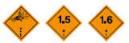 1 1,5 1,6 |
Kann eine Reihe von Eigenschaften und
Auswirkungen wie Massendetonation, Splitterwirkung,
starker Brand/Wärmefluss,
Bildung von hellem Licht, Lärm oder Rauch
haben. Schlagempfindlich und/oder stoßempfindlich und/oder wärmeempfindlich. |
Schutz abseits von Fenstern suchen. |
| Explosive Stoffe und Gegenstände mit Explosivstoff 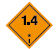 1.4 |
Leichte Explosions- und Brandgefahr. | Schutz suchen. |
| Entzündbare Gase 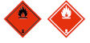 2.1 |
Brandgefahr. Explosionsgefahr. Kann unter Druck stehen. Erstickungsgefahr. Kann Verbrennungen und/oder Erfrierungen hervorrufen. Umschließungen können unter Hitzeeinwirkung bersten. |
Schutz suchen. Nicht in tief liegenden Bereichen aufhalten. |
| Nicht entzündbare, nicht giftige Gase 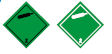 2.2 |
Erstickungsgefahr. Kann unter Druck stehen. Kann Erfrierungen hervorrufen. Umschließungen können unter Hitzeeinwirkung bersten. |
Schutz suchen. Nicht in tief liegenden Bereichen aufhalten. |
| Giftige Gase 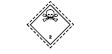 2.3 |
Vergiftungsgefahr. Kann unter Druck stehen. Kann Verbrennungen und/oder Erfrierungen hervorrufen. Umschließungen können unter Hitzeeinwirkung bersten. |
Notfallfluchtmaske verwenden. Schutz suchen. Nicht in tief liegenden Bereichen aufhalten. |
| Entzündbare flüssige Stoffe 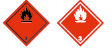 3 |
Brandgefahr. Explosionsgefahr. Umschließungen können unter Hitzeeinwirkung bersten. |
Schutz suchen. Nicht in tief liegenden Bereichen aufhalten. |
| Entzündbare feste Stoffe,
selbstzersetzliche Stoffe, polymerisierende Stoffe und desensibilisierte explosive feste Stoffe 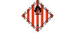 4.1 |
Brandgefahr. Entzündbar oder brennbar,
kann sich bei Hitze, Funken oder Flammen
entzünden.
Kann selbstzersetzliche Stoffe enthalten, die unter Einwirkung von Hitze, bei Kontakt mit anderen Stoffen (wie Säuren, Schwermetallverbindungen oder Aminen), bei Reibung oder Stößen zu exothermer Zersetzung neigen. Dies kann zur Bildung gesundheitsgefährdender und entzündbarer Gase oder Dämpfe oder zur Selbstentzündung führen. Umschließungen können unter Hitzeeinwirkung bersten. Explosionsgefahr desensibilisierter explosiver Stoffe bei Verlust des Desensibilisierungsmittels. |
|
| Selbstentzündliche Stoffe 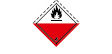 4.2 |
Brandgefahr durch Selbstentzündung bei
Beschädigung von Versandstücken oder
Austritt von Füllgut. Kann heftig mit Wasser reagieren. |
|
| Stoffe, die in Berührung
mit Wasser entzündbare
Gase entwickeln 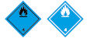 4.3 |
Bei Kontakt mit Wasser Brand- und Explosionsgefahr. | Ausgetretene Stoffe sollten durch Abdecken trocken gehalten werden. |
| Entzündend (oxidierend) wirkende Stoffe 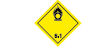 5.1 |
Gefahr heftiger Reaktion, Entzündung und Explosion bei Berührung mit brennbaren oder entzündbaren Stoffen. | Vermischen mit entzündbaren oder brennbaren Stoffen (z.B. Sägespäne) vermeiden. |
| Organische Peroxide 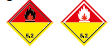 5.2 |
Gefahr exothermer Zersetzung bei erhöhten Temperaturen, bei Kontakt mit anderen Stoffen (wie Säuren, Schwermetallverbindungen oder Aminen), Reibung oder Stößen. Dies kann zur Bildung gesundheitsgefährdender und entzündbarer Gase oder Dämpfe oder zur Selbstentzündung führen. | Vermischen mit entzündbaren oder brennbaren Stoffen (z.B. Sägespäne) vermeiden. |
| Giftige Stoffe 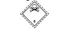 6.1 |
Gefahr der Vergiftung beim Einatmen, bei
Berührung mit der Haut oder bei Einnahme. Gefahr für Gewässer oder Kanalisation. |
Notfallfluchtmaske verwenden. |
| Ansteckungsgefährliche Stoffe 6.2 |
Ansteckungsgefahr. Kann bei Menschen oder Tieren schwere Krankheiten hervorrufen. Gefahr für Gewässer oder Kanalisation. |
|
| Radioaktive Stoffe 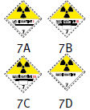 |
Gefahr der Aufnahme und der äußeren Bestrahlung. | Expositionszeit beschränken. |
| Spaltbare Stoffe 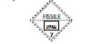 7E |
Gefahr nuklearer Kettenreaktion. | |
| Ätzende Stoffe 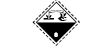 8 |
Verätzungsgefahr. Kann untereinander, mit Wasser und mit anderen Stoffen heftig reagieren. Ausgetretener Stoff kann ätzende Dämpfe entwickeln. Gefahr für Gewässer oder Kanalisation. |
|
| Verschiedene gefährliche Stoffe und Gegenstände 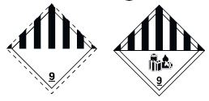 9 9a |
Verbrennungsgefahr. Brandgefahr. Explosionsgefahr. Gefahr für Gewässer oder Kanalisation. |
|
Bem.:
|
||
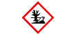 Umweltgefährdende Stoffe |
Gefahr für Gewässer oder Kanalisation. | |
Erwärmte Stoffe |
Gefahr von Verbrennungen durch Hitze. | Berührung heißer Teile der Beförderungseinheit und des ausgetretenen Stoffes vermeiden. |
Ausrüstung für den persönlichen und allgemeinen Schutz für die Durchführung allgemeiner und gefahrenspezifischer Notfallmaßnahmen, die sich gemäß Abschnitt 8.1.5 des ADR an Bord des Fahrzeugs befinden muss
Die folgende Ausrüstung muss sich an Bord der Beförderungseinheit befinden:
und für jedes Mitglied der Fahrzeugbesatzung
Für bestimmte Klassen vorgeschriebene zusätzliche Ausrüstung:
| a) | Nicht erforderlich für Gefahrzettel der Muster 1, 1.4, 1.5, 1.6, 2.1, 2.2 und 2.3. |
| b) | Nur für feste und flüssige Stoffe mit Gefahrzettel-Nummer 3, 4.1, 4.3, 8 oder 9 vorgeschrieben. |